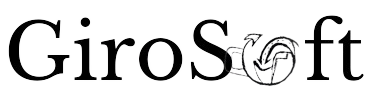

<ion-header class="header">
  <ion-toolbar>
    
  </ion-toolbar>
</ion-header>

<ion-content class="ion-padding">
  <div class="login-container">
    <h2>Inicio de sesión</h2>
    
    <form #loginForm="ngForm" (ngSubmit)="login(loginForm)">
      <ion-item>
        <ion-input 
          type="email" 
          name="email" 
          ngModel
          required
          email
          placeholder="Usuario@girosoft.com">
        </ion-input>
      </ion-item>
      
      <ion-item>
        <ion-input 
          type="password" 
          name="password" 
          ngModel
          required
          minlength="6"
          placeholder="Contraseña">
        </ion-input>
      </ion-item>
      
      <ion-button 
        expand="block" 
        type="submit" 
        [disabled]="!loginForm.valid || isLoading">
        <ion-spinner *ngIf="isLoading"></ion-spinner>
        <span *ngIf="!isLoading">Iniciar sesión</span>
      </ion-button>
    </form>
  </div>
</ion-content>